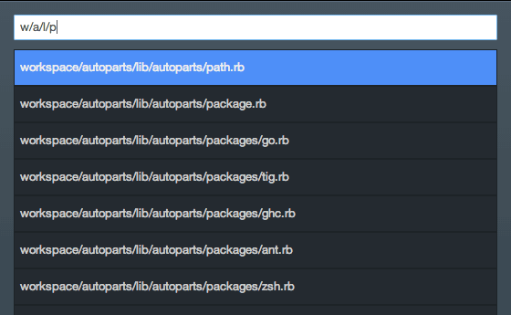
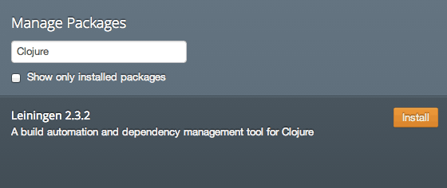
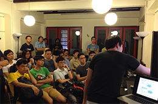

The Nitrous.IO Web IDE Levels Up
At Nitrous.IO, we like to say that our Web IDE is the easiest way to code in your web browser. This month we shipped many of the great IDE improvements you've been waiting for.

Let's take a quick look at some of the new improvements:
- Quick Open (pictured above): Looking for a specific file within your Nitrous box? Press Shift-Ctrl-P while using the editor to quickly find and open any file.
- Find in Project: We've added a search menu which allows you to search through all of the files within your project, and open a file within the search results. Press Shift-Ctrl-F (Shift-Cmd-F for Mac) in order to bring up the search menu.
- Auto Completion: You can now access auto completion hints for CSS, XML, HTML and JavaScript files. Press Ctrl-Space to see auto completion hints, and press Tab or Enter to insert your current selection.
- Light and Dark Themes: You can choose from 8 different themes by navigating in the menu to View > Themes.
- Bracket Matching: Brackets, braces, parentheses and quotes are now auto-closed for you. To jump to the matching bracket, hit Ctrl-M.
Read our blog post for list of other new features that have been added.
Learning Clojure on Nitrous.IO
Some developers may not know that Java Virtual Machine (JVM) is included in every Nitrous box. Now knowing this, you can start working on Clojure projects within seconds.

Clojure is a dialect of LISP, a great way to pick up functional programming, and can be compiled to both JVM bytecode and JavaScript. This makes it a viable language for writing both server-side and client-side applications.
Ready to start? Read our article, Learning Clojure on Nitrous.IO.
|
Learning
Our developers in San Francisco and Singapore have been found at many meetups lately talking about Go, Ember.JS, and a few other things we are fond of.
|
|

|
Golang Meetup Recap
We recently hosted the first Golang meetup in Singapore which included talks about static analysis as well as an introduction.
Take a look at our blog post to view slides and read more about how you can get involved with the Go language community.
|
|
|
|
Building Desktop Apps with Ember.JS
This month, Pete Kim held a presentation on how you can build desktop apps with Ember.JS and Node-webkit. This method allows you to quickly build a cross-platform OS X or Windows application and customize it using JavaScript and CSS.
Want to see how it's done? Head over to our blog and view the presentation slides and download the demos.
|
|
|
New Packages Available in Autoparts
We have been busy adding many new packages which users have asked for, and the Nitrous.IO community has been pitching in as well. New packages include:
-
CouchDB
-
Leiningen (for Clojure support)
-
Elixir
-
Google App Engine (Go version)
-
Exuberant Ctags
-
Chruby (for Ruby version control)
View the changelog for a full list of updates.
Add Startup Scripts to Your Nitrous Box
The .nitrousboxrc file allows you to run scripts in non-interactive mode when your Nitrous box starts. This means if your Nitrous box is ever restarted in any scenario (including automatic restarts after maintenance), you can ensure these scripts will start back up.
To get started, read our article on configuring your .nitrousboxrc file.
|
|